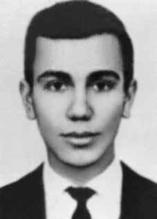

Mário
de Souza
Prata
CIRCUNSTÂNCIAS DA MORTE
Mário de Souza Prata morreu em 3 de abril de 1971, em circunstâncias ainda não esclarecidas. Conforme informação divulgada à época pelas forças de segurança, Mário Prata, na companhia de Marilena Villas Boas Pinto, também militante do MR-8, foi surpreendido por oficiais da Brigada Aeroterrestre quando chegava ao “aparelho” que ocupava na rua Niquelândia, localizada no bairro de Campo Grande. Teria sido morto no confronto armado que se seguiu ao encontro.
A Informação nº 624/71-G, do Centro de Informações do Exército (CIE), datada de 23 de abril de 1971, registra a versão dos órgãos de segurança sobre a morte de Mário de Souza Prata: Cerca das 23:00 horas o casal chegou, não em um Volksvagem mas num táxi o que surpreendeu a equipe levando-a mudar o dispositivo para a abordagem da viatura, seus ocupantes percebendo a manobra atiraram contra equipe, Major José Túlio Toja Martins Filho e Capitão Oscar de Souza Parreira, ferindo mortalmente o referido Major no tiroteio, foi morto o terrorista foragido Mário de Souza Prata (Dissidência do PCB da GB) e ferida gravemente vindo a falecer posteriormente Marilena Pinto Carneiro Mendonça (Marilena Pinto Villas Boas) quando solteira.
A notícia sobre a morte dos dois militantes só foi divulgada dois meses depois do suposto tiroteio. Em 4 de junho os jornais O Globo, O Dia e Jornal do Brasil publicaram as manchetes “Terrorista Assassino Foi Morto ao Resistir à Prisão”, “Casal Terrorista Morto ao Resistir à Ordem de Prisão” e “Mortos no Tiroteio Terrorista e a Amante”. As matérias reproduziam na íntegra a versão divulgada pela Secretaria de Segurança Pública do Rio de Janeiro.
De acordo com o Ofício nº 646/71 do Departamento de Ordem Política e Social do Rio de Janeiro (DOPS/RJ), de 28 de junho de 1971, o corpo de Mário Prata deu entrada no Instituto Médico-Legal (IML) em 3 de abril de 1971, pela guia nº 70, expedida pela 35ª DP, como: “[…] desconhecido, morto em tiroteio com as forças de segurança, às 20:45 horas do dia 2 de abril de 1971”.
Dias após o falecimento, em 6 de abril de 1971, o Instituto Pereira Faustino identificou o cadáver e enviou a informação ao DOPS, registrando como data da morte o dia 3 de abriliv . Ainda assim, na certidão de óbito, emitida em 23 de abril de 1971, Mário Prata consta como desconhecido, morto em 2 de abril, às 20h45.
Esses dados contradizem a Informação nº 624/71-G do I Exército, que indica que o suposto tiroteio ocorreu às 23 horas daquele diavi , ou seja, ao menos duas horas depois do horário da morte divulgado na certidão de óbito, assinada pelo Dr. José Guilherme Figueiredo. A causa de morte registra “feridas penetrantes do tórax e abdômen e transfixantes do abdômen com lesão do pulmão esquerdo, fígado e baço – hemorragia interna, anemia aguda” , mas a única foto do rosto de Mário, encontrada nos arquivos do DOPS, mostra marcas de vários ferimentos e edemas na região frontal do crânio.
Mário foi enterrado como indigente no cemitério Ricardo de Albuquerque, no Rio de Janeiro. Seus restos mortais foram removidos para o ossuário geral do cemitério e depois para uma vala comum.
Mário de Souza Prata died on April 3, 1971, under circumstances that have not yet been clarified. According to information released at the time by the security forces, Mário Prata, in the company of Marilena Villas Boas Pinto, also a member of the MR-8, was surprised by officers from the Airborne Brigade when he arrived at the “apparatus” he occupied on Niquelândia Street, located in the Campo Grande neighborhood. He was reportedly killed in the armed confrontation that followed the meeting.
Information No. 624/71-G, from the Army Information Center (CIE), dated April 23, 1971, records the version of the security agencies about the death of Mário de Souza Prata: Around 11:00 pm the couple arrived, not in a Volkswagen but in a taxi, which surprised the team, leading them to change the device to approach the vehicle, its occupants realizing the maneuver and shot at the team, Major José Túlio Toja Martins Filho and Captain Oscar de Souza Parreira, mortally wounding the aforementioned Major in the shootout, the fugitive terrorist Mário de Souza Prata (GB PCB Dissent) was killed and seriously injured and Marilena Pinto Carneiro Mendonça (Marilena Pinto Villas Boas) later died when single.
The news about the death of the two militants was only released two months after the alleged shooting. On June 4, the newspapers O Globo, O Dia and Jornal do Brasil published the headlines “Terrorist Murderer Was Killed When Resisting Arrest”, “Terrorist Couple Killed When Resisting Arrest Order” and “Killed in Terrorist Shooting and Lover”. The articles reproduced in full the version released by the Public Security Secretariat of Rio de Janeiro.
According to Official Letter No. 646/71 from the Department of Political and Social Order of Rio de Janeiro (DOPS/RJ), dated June 28, 1971, Mário Prata's body was admitted to the Medical-Legal Institute (IML) on April 3, 1971, under slip No. 70, issued by the 35th DP, as: “[…] unknown, killed in a shootout with security forces, at 8:45 p.m. April 2, 1971.”
Days after his death, on April 6, 1971, the Pereira Faustino Institute identified the corpse and sent the information to the DOPS, recording April 3 as the date of deathiv. Even so, in the death certificate, issued on April 23, 1971, Mário Prata is listed as unknown, having died on April 2, at 8:45 pm.
These data contradict Information No. 624/71-G of the 1st Army, which indicates that the alleged shooting occurred at 11 pm on that day, that is, at least two hours after the time of death published in the death certificate, signed by Dr. José Guilherme Figueiredo. The cause of death records “penetrating wounds to the chest and abdomen and transfixing wounds to the abdomen with damage to the left lung, liver and spleen – internal bleeding, acute anemia”, but the only photo of Mário's face, found in the DOPS files, shows marks of several injuries and edema in the frontal region of the skull.
Mário was buried as a pauper in the Ricardo de Albuquerque cemetery, in Rio de Janeiro. His remains were removed to the cemetery's general ossuary and then to a mass grave.
Mário de Souza Prata falleció el 3 de abril de 1971, en circunstancias aún no esclarecidas. Según información difundida en su momento por las fuerzas de seguridad, Mário Prata, en compañía de Marilena Villas Boas Pinto, también integrante del MR-8, fue sorprendido por agentes de la Brigada Aerotransportada cuando llegó al “aparato” que ocupaba en la calle Niquelândia, ubicado en el barrio de Campo Grande. Según los informes, fue asesinado en el enfrentamiento armado que siguió a la reunión.
La información nº 624/71-G, del Centro de Información del Ejército (CIE), de 23 de abril de 1971, registra la versión de los organismos de seguridad sobre la muerte de Mário de Souza Prata: Alrededor de las 23 horas llegó la pareja, no en un Volkswagen sino en un taxi, lo que sorprendió al equipo, llevándolos a cambiar el dispositivo para acercarse al vehículo, sus ocupantes se dieron cuenta de la maniobra y dispararon contra el equipo, mayor José Túlio Toja Martins Filho. y el Capitán Oscar de Souza Parreira, hiriendo mortalmente al mencionado Mayor en el tiroteo, el terrorista prófugo Mário de Souza Prata (GB PCB Dissent) fue asesinado y gravemente herido y Marilena Pinto Carneiro Mendonça (Marilena Pinto Villas Boas) murió posteriormente cuando estaba soltera.
La noticia sobre la muerte de los dos militantes no se conoció hasta dos meses después del presunto tiroteo. El 4 de junio, los periódicos O Globo, O Dia y Jornal do Brasil publicaron los titulares “Terrorista asesino fue asesinado al resistirse al arresto”, “Pareja terrorista asesinada al resistirse a la orden de arresto” y “Muerto en tiroteo terrorista y amante”. Los artículos reproducen íntegramente la versión difundida por la Secretaría de Seguridad Pública de Río de Janeiro.
Según Oficio nº 646/71 del Departamento de Orden Político y Social de Río de Janeiro (DOPS/RJ), de 28 de junio de 1971, el cuerpo de Mário Prata fue ingresado en el Instituto Médico Legal (IML) el 3 de abril de 1971, bajo hoja nº 70, emitida por la 35ª DP, como: “[…] desconocido, muerto en tiroteo con fuerzas de seguridad, a las 8:45 pm del 2 de abril de 1971”.
Días después de su muerte, el 6 de abril de 1971, el Instituto Pereira Faustino identificó el cadáver y envió la información al DOPS, registrando como fecha de muerte el 3 de abril. Aun así, en el certificado de defunción, expedido el 23 de abril de 1971, Mário Prata figura como desconocido, habiendo fallecido el 2 de abril, a las 20.45 horas.
Estos datos contradicen la Información No. 624/71-G del 1º Ejército, que indica que el presunto tiroteo ocurrió a las 23 horas de ese día, es decir, al menos dos horas después de la hora de muerte publicada en el certificado de defunción, firmado por el Dr. José Guilherme Figueiredo. La causa de la muerte registra “heridas penetrantes en el pecho y el abdomen y heridas transfixiantes en el abdomen con daños en el pulmón izquierdo, el hígado y el bazo – hemorragia interna, anemia aguda”, pero la única foto del rostro de Mário, encontrada en los archivos del DOPS, muestra marcas de varias heridas y edema en la región frontal del cráneo.
Mário fue enterrado como indigente en el cementerio Ricardo de Albuquerque, en Río de Janeiro. Sus restos fueron trasladados al osario general del cementerio y luego a una fosa común.